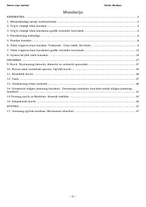

FKFizikaning mexanika bo'limi bo'yicha nazariy va amaliy o'quv qo'llanma.
Ushbu o'quv qo'llanma Innova o'quv markazi o'qituvchisi Sardor Berdiyev tomonidan tayyorlangan bo'lib, fizikaning kinematika, dinamika va statika bo'limlari bo'yicha nazariy ma'lumotlar va amaliy masalalarni o'z ichiga oladi. Kitob o'quvchilarga mexanik harakat qonuniyatlarini tushunish va fizik masalalarni yechish ko'nikmalarini rivojlantirishga yordam beradi.